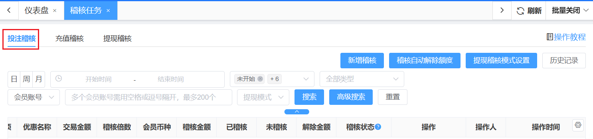
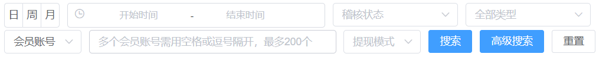
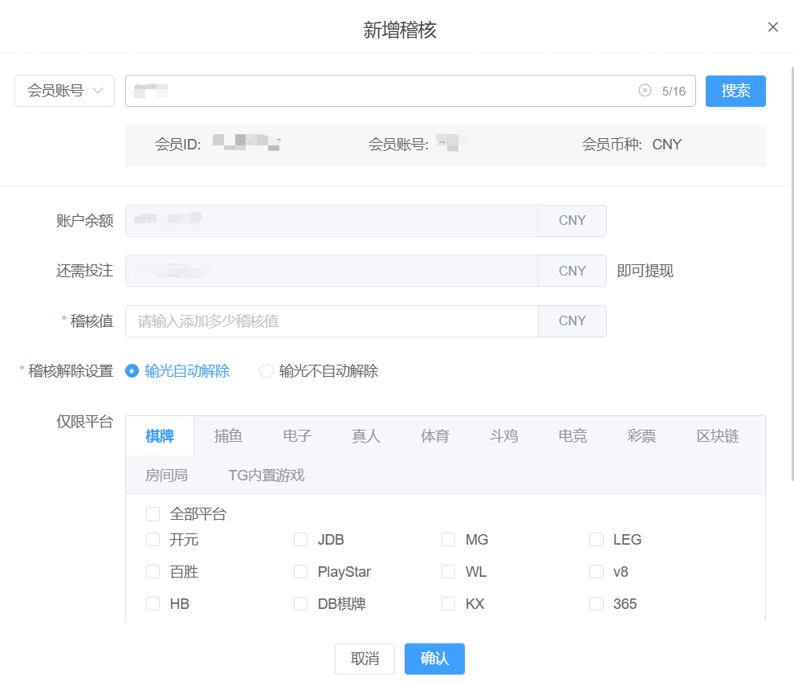
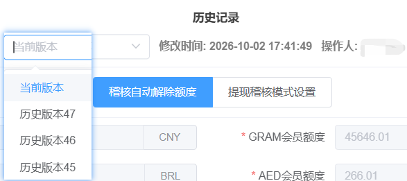
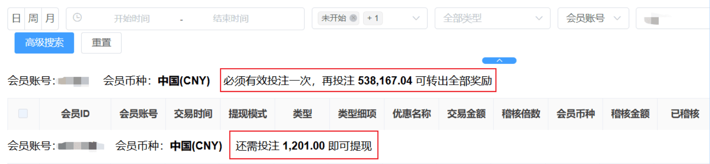
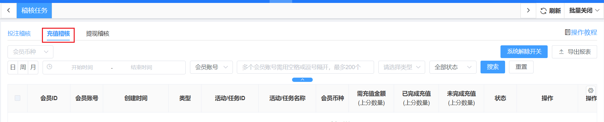
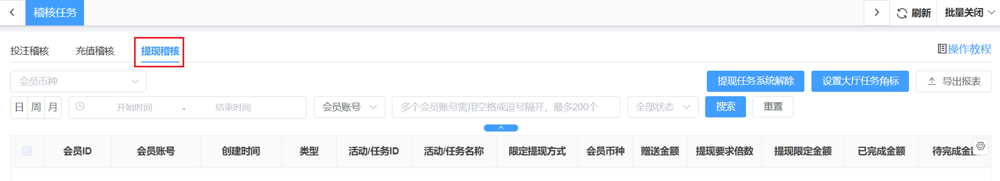
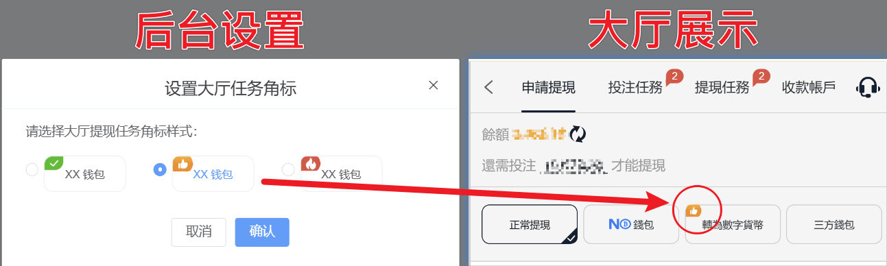

稽核任务
一、投注稽核

1、功能说明：可通过会员账号查询会员的全部稽核任务（仅支持单用户精准搜索）对单条稽核任务操作【人工解除】解除后，对应的任务不需要打码即可申请提款。
2、搜索项：

2.1、稽核状态：可多选，可联想输入。选中【未开始】和【进行中】则可不限制搜索时间范围。
(1) 未开始：即该稽核任务还没有开始，需要完成之前的稽核任务后再会开始（按照时间顺序）。
(2) 进行中：表示正在进行该稽核任务，完成后即可提现对应金额。
(3) 恢复进行中：当稽核被系统自动解除后，如果后续注单发生二次结算，且重新核算后发现用户实际上并未满足系统解除稽核的条件，系统会将该笔稽核恢复，并继续要求用户完成原本未完成的稽核条件。
(4) 已完成：已完成该稽核任务。
(5) 人工解除：即通过后台人员操作解除该稽核任务。
(6) 已放弃：即提现稽核模式设置:"充值可直接提现"才会有的状态，当有稽核（投注任务未完成而发起提现，根据若设置清零则提现完成后该稽核将放弃。
(7) 系统解除：即余额低于设置的稽核自动解除额度时，系统自动解除稽核。
(8) “部分停用”角标：若第三方游戏被业主关停、或第三方游戏提供商关停游戏，稽核状态字段为“未开始”、“进行中”，显示此角标。
2.2、稽核全部类型
(1) 稽核来源类型: 会员充值、会员提现、银商结算、资金修正、活动、返水、返佣、利息宝、任务、VIP奖励、充值优惠、担保理赔、、代理转帐、信用借款、俱乐部会员充值、系统稽核、俱乐部、SVIP奖励、幸运转盘、公积金、盲盒抽奖、代理、俱乐部会员提现、意外惊喜、打赏、三方游戏币兑换、积分抽奖、折扣券、特惠商城、特邀奖励。
2.3、提现模式:
(1) 必须稽核: 提现稽核模式为"必须完成所有稽核"，所产生的稽核都为必须稽核。
(2) 可直接提现: 提现稽核模式为"充值可直接提现"，所产生的稽核为可直接提现。
(3) 必须投注一次: 提现稽核模式为"充值可直接提现"，当充值上分时即会产生必须投注一次。
3、功能模块:
3.1 新增稽核：可针对特定玩家设定稽核值、稽核解除条件设置。

3.2 稽核自动解除额度：能通过相关字段进行数据检索。
(1) 符号说明：币种符号表是金额，数字符号表示积分。
(2) 说明：
● 默认配置为10.00。
● 当玩家在一个周期内的实际亏损达到系统核算的应亏损金额时，系统将自动解除此前所有稽核任务。若设置为 0.00，则表示关闭自动解除功能。
● 强烈建议：解除金额一定要小于游戏准入金额，防止被恶意利用和套利。
● 数字格式：限制0.00-999999.99之间，保留小数点后2位。
(3) 稽核分为投注稽核、充值稽核和提现稽核三种类型。
(4) 优先解除充值本金类型的稽核，同为充值本金稽核则按产生时间先产生的先进行解除。
(5) 同为其他稽核的，则产生时间先产生的先进行解除。
(6) 无论哪种模式下，稽核规则相同，即都是优先解除充值本金的稽核。
(7) 解除优先级：充值本金必打稽核>>其他必打稽核 >>充值本金可直接提现稽核>>其他可直接提现稽核。
(8) 稽核排除最优先进行判断，若游戏排除则，任何稽核不会进行消费。
(9) 触发解除稽核：
● 会员回到大厅
● 回到大厅后第10分钟
● 上分
(10) 不自动解除情况：
● 会员在游戏中
● 上分前的余额大于系统解除金额
● 系统解除开关没打开
● 无未完成任务（投注任务、充值任务、提现任务）
● 有未结算注单
● 输的金额不足够(举例：用户充值及领取奖励后，共上分 1000，转入三方游戏平台进行游戏，转出后账户余额仅剩 1。但若三方回传的游戏数据仅显示用户亏损 -500（例如可能存在藏分情况，或三方数据统计延迟），系统便无法判定用户已将资金输尽，因此无法自动解除稽核任务。)
3.3 提现稽核模式设置：原【站点管理】的“提现稽核模式设置”弹窗移动到投注稽核页面来。
(1) 提现稽核模式：分为单钱包及多钱包模式
● 单钱包：即余额钱包，充值的金额的进入余额钱包，当前余额即可提现余额；
● 多钱包：即余额钱包与奖励钱包同时独立存在，任务及活动相关额奖励金额进入奖励钱包，充值金额进入余额钱包；
(2) 上分后的提现要求：
● 有效投注一次即可提现(默认)：充值稽核倍数依然有效，但充值产生的是"奖励"投注任务，不影响会员提现。要求自最后一次充值后必须进行一次有效投注。
● 必须完成充值设置中的稽核倍数才能提现：按充值设置中的稽核倍数生成“必须稽核”类型的投注任务，必须打完要求的流水，余额钱包中金额才能提现。
(3) 强制提现奖励清零：若有投注任务未完成，则客户端的按钮是强制提现，提现成功会放弃所有未领取奖励。
(4) 奖励转入余额规则：
● 逐条完成逐条转入：完成一条奖励任务，即可转出此条相对应奖金。
● 一次性完成后才能转入：必须完成所有的稽核任务，才能将对应的奖金转入到可提现余额。
(5) 奖励投注任务有效时长：可对奖励投注任务设置有效时长（单位/小时），会员必须在有效时长内完成投注要求，才能将对应奖励金额转入到可提现余额，否则将视为放弃，奖励将在超时后自动清零。
(6) 奖励转入余额阶梯：“逐条完成逐条转入”规则下可将领取奖励的投注任务设置为多个阶梯，会员完成该阶梯的投注要求，即可将该阶梯对应的奖金转入到可提现余额。
(7) 大厅多钱包余额详情样式：
● 默认选中弹窗方式，可选下拉菜单，可点击查看预览大图。
● 选弹窗方式时，显示“弹窗样式风格”和“选择弹窗颜色”选项。共4种风格，每种风格10种颜色。
3.4 历史纪录：直接通过“历史配置详情”查看设置的当前版本、历史版本的对应内容。存在多个设置项，点击不同设置项，即可分别查看各自的历史版本。

3.5 会员讯息显示：当批量搜索出多个会员的结果时，不显示此字段。
(1) 会员账号
(2) 会员币种
(3) 目前稽核汇总讯息:
● 有必须稽核，则显示“还需投注 XX.XX 即可提现”
● 必须稽核和需有效投注一次，同时存在，则只显示“还需投注XX即可提现”
● 无必须稽核，有需投注一次，则显示出文案："必须有效投注一次"
● 只要有奖励钱包的稽核，就显示文案："再投注XXX.XX可转出全部奖励 "

4、批量：
4.1 全选当前页：全选当前页面所有订单进行批量操作。
4.2 批量人工解除：批量解除当前选中订单。
5、操作:
5.1 人工解除：即通过后台人员操作解除该稽核任务。
5.2 详情：可查看交易时间、交易金额、稽核金额、仅限平台、限制游戏。
(1) 限制游戏: N个子游戏，点击弹出弹窗显示所有的限制子游戏清单。
(2)“部分停用”角标： 若第三方游戏被业主关停、或第三方游戏提供商关停游戏，在游戏类型、品牌栏中显示。
(3)“已停用”角标：具体的某个游戏被停用时，在游戏右上角显示。
二、充值稽核

1、功能说明：
1.1 可查询会员领取活动奖金后若想提现，还需充值的金额。
1.2 每条记录有需充值金额，当会员有充值后，按时间倒序（最老的一条记录）逐条解除。
1.3 所有提现限制记录都解除后，该会员才能提现。
2、批量:
2.1 全选当前页：全选当前页面所有订单进行批量操作。
2.2 批量人工解除：批量解除当前选中订单。
三、提现稽核

1、功能说明：
1.1 会员领取了提现活动或任务(奖金提现方式限制) 奖励，该活动有限制指定提现方式进行提现限制。
1.2 有提现任务的会员，大厅才显示“提现任务”页签，页签上线上未完成任务数气泡。
2、设置大厅任务角标:
